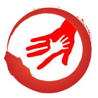
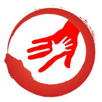
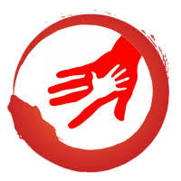

Kenali Gejala Burnout
Kesehatan mental itu penting. Ketahui tanda-tanda awal burnout sebelum terlambat.

Kesehatan mental itu penting. Ketahui tanda-tanda awal burnout sebelum terlambat.
Burnout adalah kondisi kelelahan emosional, fisik, dan mental yang disebabkan oleh stres berlebihan dan berkepanjangan, terutama yang berhubungan dengan pekerjaan, sekolah, atau tanggung jawab sehari-hari. Burnout bukan sekadar rasa lelah biasa. ini adalah titik jenuh total yang membuat seseorang merasa tidak mampu lagi menghadapi tekanan hidup.